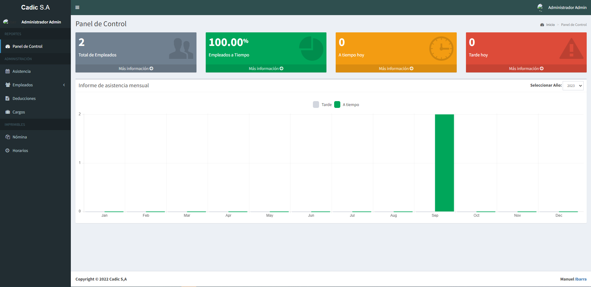
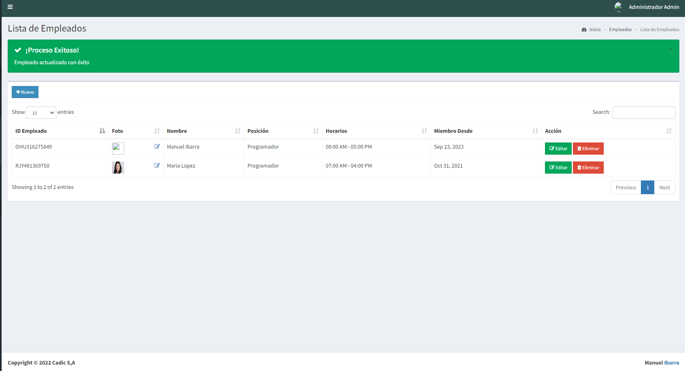
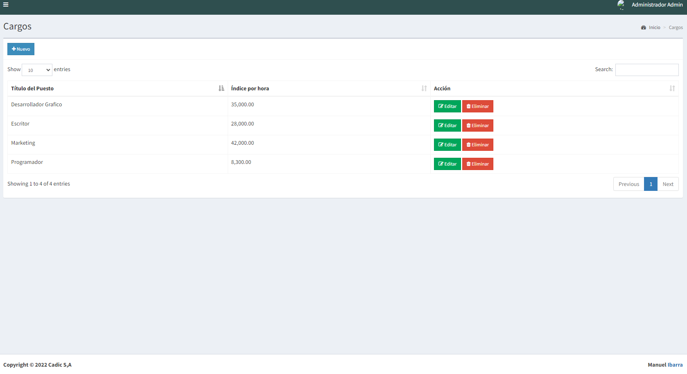
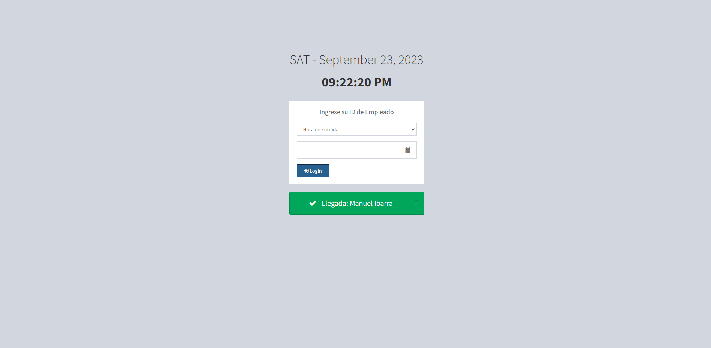
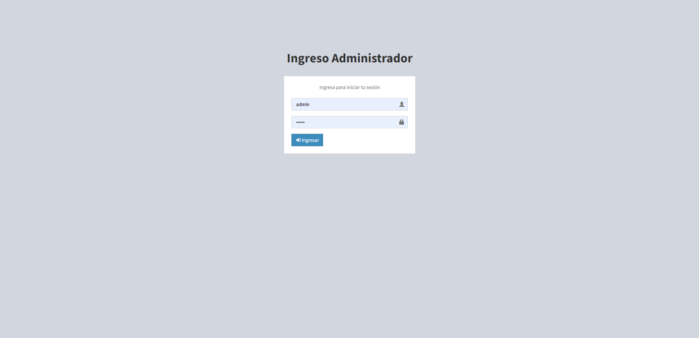

Imagenes
-

Dasboard
Dasboard del sistema donde se filtran el total de empleados el total de empleados que llegaron a tiempo y tarde
-

Control de empleados
Donde se agregar el empleado y cargo
-

Control de cargo
En el apartado de control de cargo se asigna el salario por hora del cargo
-

Control de asistencia
En este apartado se coloca el ID del empleado para su registro de entrada/salida
-

Control de nomina
Aca se toma el salario por hora y se calcula segun las horas trabajas del mes y sus deducciones de INSS PATRONAL/LABORAL e IR
-

Logeo
http://localhost/controlnomina/controlnomina/admin/index.php usuario: admin contraseña: admin